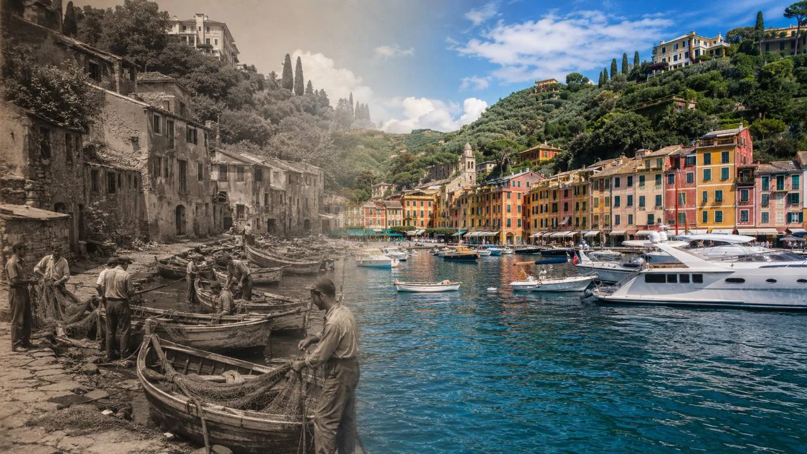
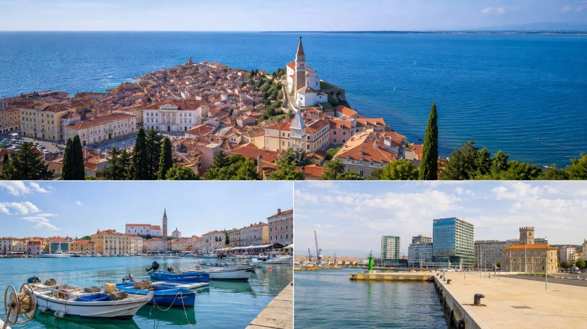
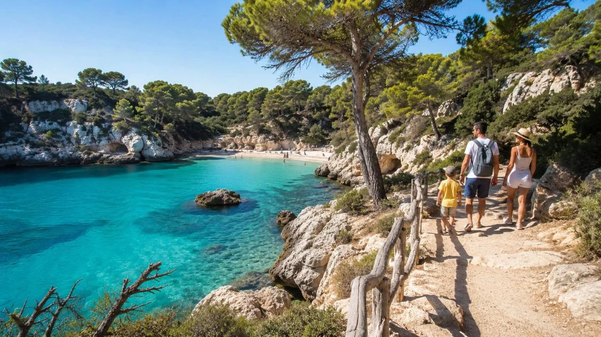
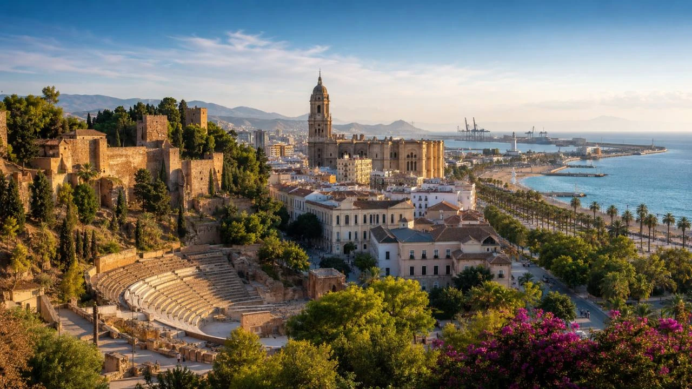
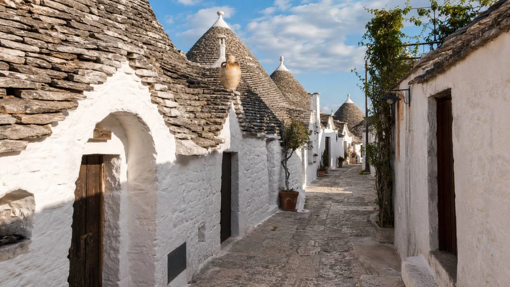

Stredomorie si väčšina ľudí predstaví jednoducho: tyrkysové more, pláže, západy slnka, staré mestá a dovolenková pohoda. Lenže práve v tom je jeho čaro. Za známymi fotkami sa často skrývajú príbehy, ktoré si bežný turista na prvý pohľad vôbec nevšimne.
Niektoré dnešné prémiové dovolenkové miesta boli kedysi obyčajné rybárske dediny. Slovinsko má síce len krátky úsek pobrežia, ale na malom priestore ponúka historické mestá, prístavy, soľné panvy aj prímorskú atmosféru. Menorca nie je iba „menšia Mallorca“, ale ostrov s významnou ochranou prírody. Málaga nie je len letisko k plážam Costa del Sol, ale plnohodnotné historické mesto. A trulli domčeky v Apúlii nie sú rozprávková kulisa, ale stará stavebná tradícia zapísaná v UNESCO.
Toto je prvá časť seriálu 5 zaujímavostí Stredomoria, o ktorých nie každý vie. Nie je to rebríček najkrajších miest. Skôr výber príbehov, ktoré ukazujú, že Stredomorie je oveľa hlbšie, pestrejšie a zaujímavejšie než len klasická letná dovolenka.
Tento článok je spracovaný ako AI cestovateľský prieskum z verejných zdrojov. Nie je písaný ako osobná skúsenosť z návštevy všetkých uvedených miest.
1. Mnohé známe dovolenkové miesta boli kedysi jednoduché rybárske dediny
Dnes ich poznáme ako miesta s hotelmi, reštauráciami, promenádami, prístavmi a drahými výhľadmi na more. Lenže viaceré známe stredomorské destinácie mali kedysi oveľa jednoduchší charakter. Život sa tam netočil okolo turistov, ale okolo mora, lodí, rýb, malých prístavov a každodennej práce miestnych ľudí.
Treba to povedať opatrne: nie každé dovolenkové letovisko bolo kedysi rybárskou dedinou. Niektoré mestá mali od začiatku obchodný, vojenský alebo prístavný význam. Ale v Stredomorí sa veľmi často opakuje príbeh, že malé pobrežné sídla sa časom zmenili na obľúbené turistické miesta.
Typickým príkladom je Portofino v Taliansku. Dnes sa spája s luxusom, jachtami, farebnými domami a elegantnou atmosférou Ligúrskej riviéry. Zdroje ho však opisujú ako miesto, ktoré bolo ešte v minulosti jednoduchou rybárskou a námornou obcou.
Podobný kontrast vidno aj na gréckych ostrovoch. Naoussa na ostrove Paros je dnes známe miesto s reštauráciami, barmi, bielymi uličkami a prázdninovou atmosférou. Zároveň si však stále drží silný obraz starého prístavu s rybárskymi loďami.
Na Malte je pekným príkladom Marsaxlokk. Toto miesto nie je typické luxusné letovisko, ale patrí medzi najznámejšie rybárske dediny na ostrove. Jeho prístav s farebnými loďkami luzzu patrí k najfotogenickejším obrazom Malty.
Pre cestovateľa je na tom zaujímavé hlavne to, že za dnešnou dovolenkovou kulisou často zostali staré vrstvy života. Stačí sa pozerať pomalšie: na malé člny v prístave, siete pri móle, staré kamenné domy, ranný trh, jednoduché taverny alebo miestnych ľudí, ktorí pri mori nežijú kvôli fotkám, ale preto, že tam žili celé generácie.

Pre koho je to dobrý tip
Pre ľudí, ktorí nechcú vidieť iba pláž a hotel. Takéto miesta sú výborné na večernú prechádzku, fotenie, jedlo pri mori a vnímanie atmosféry. Najlepšie fungujú mimo najväčšej špičky, skoro ráno alebo večer.
2. Slovinské pobrežie je krátke, ale prekvapivo pestré
Slovinsko si veľa ľudí predstaví cez hory, jazerá, Ľubľanu, Bled alebo Julské Alpy. Keď sa povie dovolenka pri Jadrane, väčšina Slovákov automaticky myslí na Chorvátsko. Lenže Slovinsko má tiež svoj vlastný kúsok mora.
A práve tu je zaujímavosť: slovinské pobrežie je krátke, ale na malom priestore ponúka prekvapivo veľa rôznych zážitkov. Najznámejším miestom je Piran, historické pobrežné mesto na výbežku do mora, s úzkymi uličkami, námestím, prístavom a silným benátskym vplyvom.
Vedľa Piranu je Portorož, ktorý má iný charakter. Je známejší ako kúpeľné a dovolenkové miesto. Ďalším mestom je Izola, pokojnejšia a viac lokálna. Potom je tu Koper, najväčšie mesto na slovinskom pobreží a dôležitý prístav.
Slovinské pobrežie je zaujímavé tým, že sa dá prejsť pomerne jednoducho. Na krátkom úseku sa dá spojiť historický Piran, kúpeľný Portorož, pokojnejšia Izola, mestský Koper a prírodné miesta v okolí. Nie je to destinácia pre niekoho, kto čaká nekonečné pieskové pláže. Je to skôr pobrežie na prechádzky, krátke výlety, jedlo, výhľady, cyklistiku a kombináciu mora s vnútrozemím Slovinska.

Pre koho je to dobrý tip
Pre cestovateľov, ktorí chcú vidieť menej očakávané Stredomorie. Slovinské pobrežie je vhodné pre ľudí, ktorí majú radi historické mestá, prístavy, krátke presuny a pokojnejší štýl cestovania.
3. Menorca nie je len pokojnejšia sestra Mallorky
Menorca sa často označuje ako pokojnejšia sestra Mallorky. Je to pekné prirovnanie, ale treba ho brať ako cestovateľské zjednodušenie. Menorca vie byť v hlavnej sezóne drahá aj navštevovaná. Nie je to úplne zabudnutý ostrov bez turistov. Napriek tomu má iný charakter než Mallorca alebo Ibiza.
Veľký rozdiel je v tom, že Menorca má silný prírodný rozmer. UNESCO uvádza, že Menorca bola 8. októbra 1993 vyhlásená za biosférickú rezerváciu. Pre bežného dovolenkára to znamená, že Menorca nie je len ostrov na ležanie pri mori. Samozrejme, pláže sú veľká časť jej príťažlivosti, ale ak človek ostane iba pri hoteli a jednej pláži, ochudobní sa o veľkú časť ostrova.
Menorca je ostrov malých zátok, prírodných chodníkov, pokojnejších miest, bielych domov, suchých kamenných múrikov, majákov a prístavných miest. Známe sú napríklad zátoky ako Cala Macarella, Cala Mitjana alebo Cala Pregonda. Pri tých najznámejších však treba počítať s tým, že v sezóne môžu byť veľmi vyhľadávané.
Ak by sme ju mali zhrnúť jednou vetou: Menorca nie je len menšia verzia Mallorky. Je to ostrov, ktorý si časť svojej hodnoty postavil na prírode, krajine a pomalšom rytme.

Pre koho je to dobrý tip
Pre rodiny, páry a cestovateľov, ktorí chcú krásne more, ale nechcú len veľké rezorty a rušný nočný život. Menorca je dobrý tip pre ľudí, ktorí majú radi zátoky, prírodu, výhľady a pokojnejší dovolenkový štýl.
4. Málaga nie je len letisko k plážam Costa del Sol
Málaga je pre mnohých cestovateľov hlavne praktický bod na mape. Priletíš, vezmeš batožinu, požičiaš auto a ideš ďalej. Na Costa del Sol, do Nerji, Marbelly, Granady, Rondy alebo iných miest Andalúzie. Lenže Málaga nie je iba letisko. Je to mesto, ktoré si zaslúži vlastný čas.
Jej historická vrstva je veľmi silná. Rímske divadlo v Málage leží pri úpätí pevnosti Alcazaba a v centre mesta tak na malom priestore vidno vrstvy dejín: rímsku minulosť, islamské obdobie, kresťanskú Andalúziu aj moderné mesto.
Málaga je tiež mestom Pabla Picassa. Okrem histórie a kultúry má aj prímorskú stránku: pláž La Malagueta, prístavnú promenádu, trh, tapas bary a staré centrum. Pre predĺžený víkend je to prirodzená kombinácia mora, mesta, histórie a jedla.

Pre koho je to dobrý tip
Pre cestovateľov, ktorí chcú spojiť more, mesto, históriu a jedlo. Málaga je vhodná pre predĺžený víkend, prvú návštevu Andalúzie alebo ako pohodlný štart cesty po južnom Španielsku.
5. Trulli v Apúlii nie sú rozprávková dekorácia, ale stará stavebná tradícia
Alberobello v Apúlii patrí medzi najfotogenickejšie miesta južného Talianska. Biele domčeky s kužeľovitými kamennými strechami vyzerajú tak zvláštne, že by človek ľahko uveril, že ide o rozprávkovú kulisu vytvorenú pre turistov.
Lenže trulli nie sú moderná atrakcia. Sú to tradičné stavby s hlbokým praktickým pôvodom. UNESCO ich opisuje ako tradičné suché kamenné stavby s kužeľovitou, respektíve stupňovito klenutou strechou, typické pre údolie Itria v regióne Apúlia.
Toto je na nich krásne. Dnes sú magnetom pre turistov a fotografov, ale ich pôvod nebol dekoratívny. Vznikli ako odpoveď na miestne podmienky: dostupný kameň, suchú krajinu, potrebu úkrytu, skladovania a bývania. Trulli ukazujú jednu dôležitú vlastnosť stredomorskej architektúry: krása často vznikla z praktickosti.
Alberobello je nádherné, ale v sezóne môže byť veľmi turistické. Najlepšie funguje ráno, podvečer alebo mimo hlavnej sezóny. Ak má človek auto, oplatí sa spojiť ho aj s ďalšími miestami v Apúlii, napríklad Locorotondo, Martina Franca, Cisternino, Ostuni alebo pobrežie pri Monopoli a Polignano a Mare.

Pre koho je to dobrý tip
Pre ľudí, ktorí majú radi architektúru, fotogenické miesta, históriu a pomalšie cestovanie autom. Alberobello je veľmi vizuálne silné, ale najlepšie sa chápe v širšom kontexte Apúlie, nie iba ako rýchla zastávka na fotku.
Záver: Stredomorie je najkrajšie vtedy, keď poznáme jeho príbehy
Tieto zaujímavosti spája jedna vec: ukazujú Stredomorie inak než cez klasický dovolenkový pohľad.
Rybárske dediny nám pripomínajú, že mnohé dnešné dovolenkové kulisy vyrástli z obyčajného života pri mori. Slovinské pobrežie ukazuje, že aj krátky úsek mora môže byť pestrý a zaujímavý. Menorca dokazuje, že ostrov nemusí byť len o plážach, ale aj o krajine a ochrane prírody. Málaga búra predstavu, že je iba letiskom k letoviskám. A trulli v Apúlii ukazujú, že za krásnou architektúrou sa často skrýva praktický každodenný život.
Práve takéto detaily robia cestovanie bohatším. Keď poznáme príbeh miesta, nepozeráme sa už len na peknú fotku. Vidíme súvislosti. Vidíme ľudí, históriu, prírodu, prácu, obchod, more aj zmeny, ktoré priniesol turizmus.
A presne preto má zmysel robiť z tejto témy seriál. Stredomorie má oveľa viac zaujímavostí, než sa zmestí do jedného článku.
Krátka poznámka pod článok
Tento článok je súčasťou seriálu 5 zaujímavostí Stredomoria, o ktorých nie každý vie. Je spracovaný ako AI cestovateľský prieskum z verejne dostupných zdrojov. Nie je písaný ako osobná skúsenosť z návštevy všetkých uvedených miest. Pred cestou si vždy over aktuálne informácie o doprave, otváracích hodinách, sezónnych obmedzeniach a miestnych pravidlách.